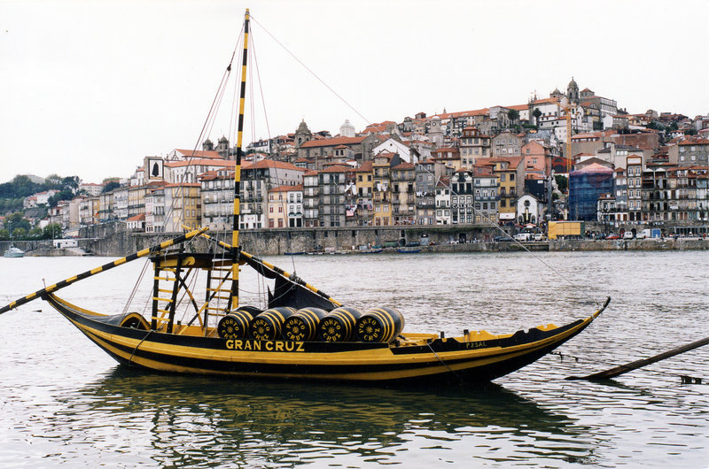
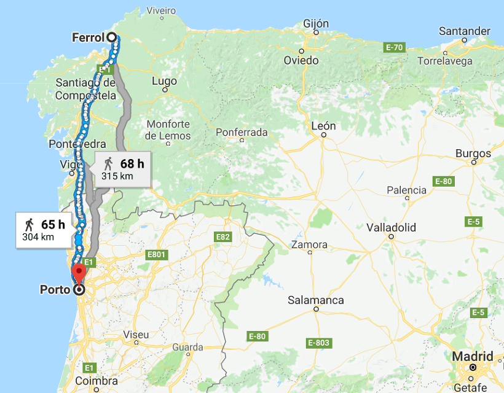
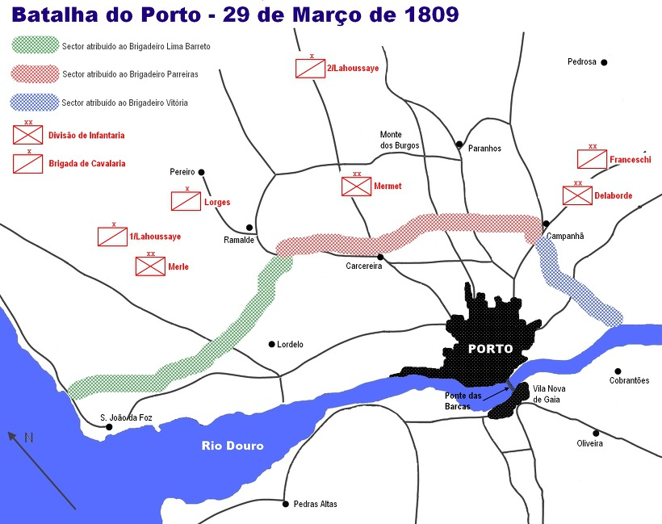
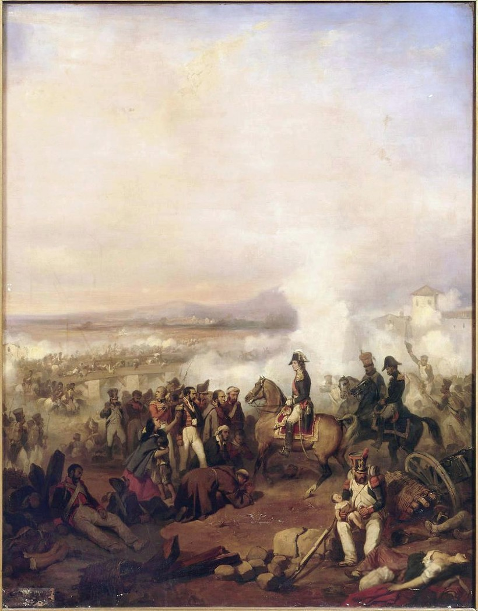
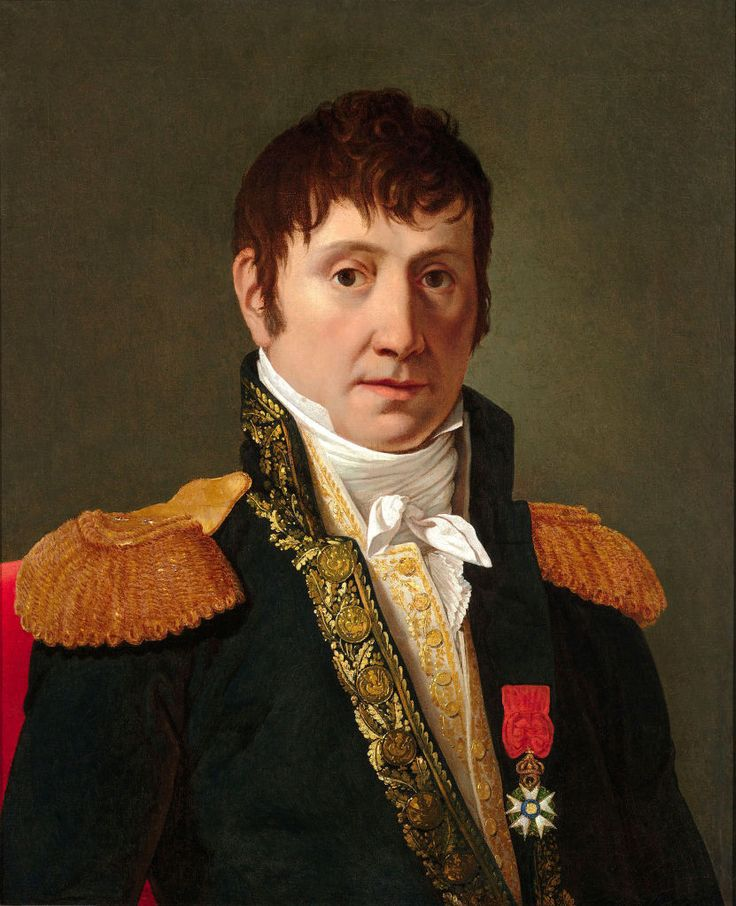

니콜라 1세의 헛된 꿈 - 포르투(Porto) 전투 1편
게시: 2018-01-21T19:22:34+09:00
1809년 초 나폴레옹이 오스트리아와의 전쟁에 정신이 팔려 있는 동안, 무어 경이 이끌던 영국 원정군을 대서양으로 쫓아낸 것으로 정리가 끝났다고 생각한 유럽의 서쪽 끝 포르투갈에서는 사건이 벌어지고 있었습니다. 장소는 포르투갈 북쪽의 항구 도시 포르투(Porto, 영어로는 Oporto)였습니다. 당시 영국 신사들의 정찬(dinner)에서 빠질 수 없는 마지막 코스였던 포트 와인(port wine)의 이름이 바로 이 도시 이름에서 나온 것일 정도로, 포르투는 포르투갈 제2의 도시이자 대영국 와인 수출 창구로서 매우 중요한 도시였습니다. 당연히 포르투갈 침공을 노리던 술트의 프랑스 군단의 제1차 목표가 바로 이 도시였습니다.

(포르투 항구는 큰 강인 도우루 Douro 강 하구에 위치합니다. 전통적으로 도우루 강가의 포도 농장에서 빚은 포트 와인은 이런 배에 실려 도우루 강을 따라 포르투에 집산된 뒤, 영국으로 수출되었습니다. 포트 와인은 먼 항해에도 와인이 상하지 않도록 증류 와인을 좀 첨가하여 보통 와인보다 좀더 알콜 도수가 높은 것으로 되어 있습니다만, 사실 포르투에서 영국까지는 고작 1~2주 밖에 걸리지 않는 점을 고려할 때 증류 와인이 첨가된 것은 그냥 술고래 영국인들 입맛에 맞도록 하기 위한 것인 것 같습니다.)
지난 1월 16일 스페인 코루냐(Coruña) 전투에서 무어 장군의 영국군을 바다로 쫓아낸 뒤, 술트는 4일 만인 1월 20일 코루냐를 함락시켰고, 다시 그로부터 1주일 뒤 스페인 제1인의 군항 페롤까지 함락시켰습니다. 여기서 얻은 막대한 영국군의 비축 군수품을 이용하여 군단을 재정비한 뒤 술트는 거의 2달 만인 3월 28일 포르투 앞에 나타났습니다. 포르투갈 정복을 시작하는데 술트는 거의 2달을 소모한 셈이었지요. 페롤 점령 이후 너무 오래 걸렸다는 생각이 들 수도 있습니다만, 페롤에서 포르투까지의 거리는 직선으로도 무려 300km가 넘고, 당시 군대의 전진 속도로는 빨라도 15일이 걸리는 먼 거리였습니다. 게다가 술트 군단은 직선으로 이동해 온 것도 아니었습니다. 포르투갈 정규군과 시민들은 강이나 협곡 등의 천연 장애물이 있는 곳곳에서 방어선을 구축하고 프랑스군의 진격을 훼방놓았으므로, 술트는 해안선을 따라 편하게 진격하지 못하고 스페인과 포르투갈의 국경선을 넘나들며 지그재그로 진격해야 했습니다.

(페롤에서 포르투까지의 거리입니다.)
술트의 진격은 당시로서는 꽤 빠른 것이었는데, 프랑스군의 기동을 보면 당시 프랑스군의 전형적인 전략 목표를 보여줍니다. 프랑스군은 오로지 돈과 물자가 몰려 있는 도시 정복에만 관심이 있었습니다. 따라서 측면이건 후방이건 적대적인 주민들의 저항을 차근차근 분쇄할 생각을 하지 않고 우회하여 쾌속으로 도시를 향해 내달렸습니다. 이건 프랑스군의 운영이 후방으로부터의 보급이 아니라 노획한 금은과 물자에 전적으로 의존한다는 점 때문이었습니다. 이건 나름대로 효과적인 전략이었으나 분명히 뒤탈이 예상되는 것이었고, 실제로 술트는 그 댓가를 톡톡히 치러야 했습니다.
술트 군단 약 2만1천이 3월 29일 포르투 시 북방에 나타나자, 포르투갈 측은 무려 2만4천을 동원하여 시 북쪽에 방어선을 쳤습니다. 그러나 그 중 제대로 무장을 갖춘 정규군은 불과 4천5백에 불과했고, 나머지는 1만의 민병대(Ordenanças, 영어로는 Ordinances)에 농기구와 사냥총을 들고 자발적으로 나선 1만의 시민들에 불과했습니다. 전투가 시작되자 용기만 있을 뿐이었던 오합지졸 포르투갈군은 와르르 무너져내려 무려 8천이 넘는 전사자와 수천의 포로를 냈습니다. 그러나 포르투갈군도 시내에서까지도 나름 용맹하게 저항하여 프랑스군 사상자도 2천에 달할 정도였습니다.

(제1차 포르투 전투의 상황도입니다. 꽤 큰 강인 도우루 강 북안에 위치한 포르투는 애초에 북쪽에서 내려오는 강력한 프랑스군으로부터 사수할 가능성이 전혀 없었습니다. 그래도 포르투갈 정규군과 민간인들은 용감하게 저항했습니다.)
여기서 프랑스군은 다른 지역에서는 잘 벌이지 않던 짓을 저지릅니다. 전투에 상당수의 민간인들이 참여한 것을 보고, 또 군대가 무너졌는데도 시내 골목 곳곳에서 시민들이 무장 저항을 하는 것을 보고 시민들에게까지 무지막지한 무력행사를 저지른 것입니다. 이 전투 및 도시 함락 때, 포르투 시민들은 숫자가 파악되지 않은 많은 희생자를 냈습니다. 특히 프랑스군의 잔혹한 폭력에 놀란 시민들이 도시 남쪽으로 이어진 부교를 통해 도시를 탈출하려고 몰리는 바람에, 이 다리가 붕괴되어 여자와 어린아이들을 포함한 많은 민간인이 희생되었습니다. 이 부교 붕괴는 프랑스군이 의도한 바는 아니었으나, 결국 프랑스군의 책임이라고 할 수 있는 일이었습니다. 이탈리아나 독일에서는 프랑스군이 이렇게 난폭하게 굴지 않았고, 따라서 도시가 함락되어도 시민들이 겁에 질려 탈출을 하지도 않았습니다. 하지만 프랑스군이 이렇게 무지막지하게 나온 이유도 결국은 포르투갈 민간인들이 저항에 참여했기 때문이니까, 무조건 프랑스군이 절대악이라고 할 수만도 없습니다. 이래저래, 결국 나쁜 것은 전쟁 그 자체인 것이지요.

(프랑스 측에서 그린 제1차 포르투 전투 전쟁화입니다. 술트 오른쪽 아래에, 사망한 엄마의 품으로부터 아기를 구조하는 프랑스 병사의 모습이 그려져 있습니다. 이 그림 속에도 도우루 강을 가로질러 놓인 다리와, 그 다리로 탈출하는 포르투 주민들의 모습이 그려져 있습니다. 그러나 실제로는 저런 기둥이 있는 다리가 아니라 부교였고, 아마 프랑스군이 저렇게 포르투갈 주민들의 아기를 구출했는지 여부도 저 다리 묘사처럼 부정확한 것 같습니다.)
이렇게 유혈 사태를 일으키며 포르투를 장악하여 많은 물자와 돈, 군수품을 획득한 술트는 의외로 남진을 하지 않고 여기서 눌러 앉아 시간을 때웠습니다. 1차 목표를 달성하여 배가 불렀기 때문이기도 했습니다만, 여기에는 다른 문제도 개입되었다고 합니다. 이 다른 문제란 이제 개인적 탐욕이 부풀어 오를대로 부풀어 오른 나폴레옹의 부하 원수들의 성향을 단적으로 보여주는 것이었습니다. 전해지는 바에 따르면, 술트는 포르투갈의 왕이 되고 싶어했다고 합니다.
당시 프랑스군 사이에서 술트 원수는 "Le Roi Nicolas", 즉 니콜라 왕으로 불리우고 있었습니다. 그 즈음해서 술트는 나폴레옹의 형제들이나 뮈라처럼 왕족이 되고 싶어 안달이 난 상태였습니다. 이제 스페인을 가로질러 만만하고 조그마한데다 기존 왕족들이 모조리 브라질로 도망가버린 무주공산 포르투갈 왕국에 성공적으로 진입하자 정말 니콜라 술트 원수가 니콜라 1세가 될 가능성이 손에 잡힐 정도로 커진 것입니다.

(프랑스어판 위키피디아에 올라온 술트의 초상화입니다. 많이 알려진 초상화와는 또 약간 좀 다른 모습이네요. 술트의 이름은 Jean-de-Dieu Soult로서, 니콜라가 아닙니다. 그런데 왜 니콜라 1세냐고요 ? 그의 출생 증명서에는 이름이 장이라고 되어 있으나, 당시 많은 사람들은 그의 first name이 Nicolas라고 알고 있었답니다. 이건 다부의 스펠링이 Davoust냐 Davout냐처럼 당사자만 확실히 알고 있을 사실이지요.)
하지만 니콜라 1세의 꿈은 요원한 것이었습니다. 일단, 프랑스군 병사들 사이에서 회자되던 "르 롸 니콜라"라는 별명은 결코 존경의 뜻이 아니었습니다. 병사들은 비아냥의 뜻으로 그렇게 부르고 있었고, 나폴레옹에게 충성하는 장교들도 만약 정말 술트가 스스로 니콜라 1세를 선포할 경우 황제를 위해 반란을 일으킬 기세였습니다. 술트는 그냥 싸움질에 소질이 있는 유능한 야전 지휘관에 불과했을 뿐 결코 나폴레옹이 아니었으며, 부하들의 신망을 얻어 충성심을 끌어내는 그런 대인물과는 거리가 멀었습니다. 무엇보다, 술트 자신이 나폴레옹을 잘 알고 있었으므로 나폴레옹 허락없이 스스로 니콜라 1세가 될 경우 뒷감당이 불가능하다는 것을 잘 알고 있었습니다. 그래서 술트는 뻔뻔스럽게도 심복들을 동원하여 포르투갈 주민들로 하여금 '술트를 왕으로 삼자'라고 공작을 펼쳤으나, 이건 시간 낭비에 불과했습니다. 포르투에 입성할 때 그토록 많은 민간인을 살상해놓고 그런 공작을 펼치다니, 현실 감각이 떨어진 것이지요.
오히려 더 전격적으로 리스본 공략에 나서서 실제로 리스본 정복에 성공했다면 나폴레옹이 술트를 왕으로 임명해줄 가능성이 눈곱만큼이나마 더 높았을 것입니다. 그러나 술트가 리스본으로 진격하지 않은 것에는 더 큰 이유가 있었습니다. 거기에는 영국군이 있었던 것입니다. 게다가 주변은 온통 적대 게릴라 세력이 둘러싸고 있어, 보충병력을 충원받기도 어려웠고 스페인 주둔 프랑스군과 파발문을 주고 받는 것조차도 쉽지 않았습니다. 술트는 남진은 커녕 오히려 스페인으로의 탈출을 슬슬 고려하고 있었습니다. 그러나 누가 뭐래도 후퇴는 자랑할 일이 아니었으므로, 술트는 부유한 도시 포르투를 샅샅이 훑어 먹으며 꾸물거리고 있었습니다.
그러는 사이 니콜라 1세의 꿈을 산산조각 낼 사건이 벌어졌습니다. 1809년 4월 22일, 바로 7년전 프랑스 해군 건조창에서 만들어진 40문짜리 대형 프리깃함 쉬르베이양뜨(Surveillante) 호가 리스본에 입항했습니다. 그러나 이 배에는 프랑스의 삼색기 대신 영국 깃발이 걸려있었고, 이름도 영국식으로 서베일런트라고 발음되었습니다. 이 배는 진수된지 1년 만에 영국 해군에게 나포되어 그 프랑스식 이름 그대로 영국 해군에 취역했던 것입니다. 더 중요한 것은 그 군함이 아서 웰슬리(Arthur Wellesley)를 태우고 있다는 사실이었습니다.
Source :
https://en.wikipedia.org/wiki/Porto
https://en.wikipedia.org/wiki/Jean-de-Dieu_Soult
https://fr.wikipedia.org/wiki/Jean-de-Dieu_Soult
https://en.wikipedia.org/wiki/First_Battle_of_Porto
https://en.wikipedia.org/wiki/French_frigate_Surveillante_(1802)